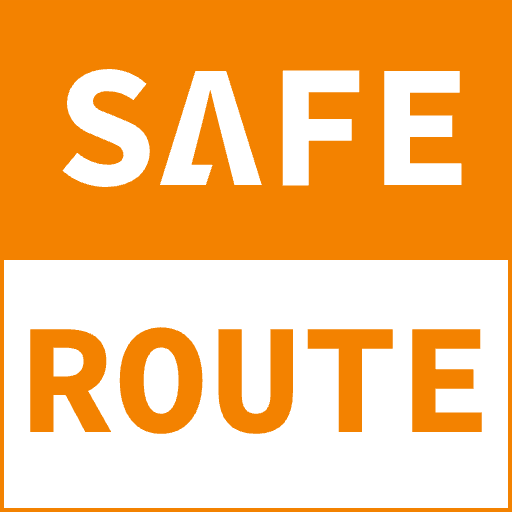
SAFEROUTE · 1CAMPUS
車走到哪一站，打開就看得到
ONE BUS · FOUR ROLES
看車到哪
上車掃碼打卡
收到上車通知
看到孩子到校
全校車況
一頁看完
發即時訊息
管打卡與路線
安心專車 SafeRoute · 1Campus
02
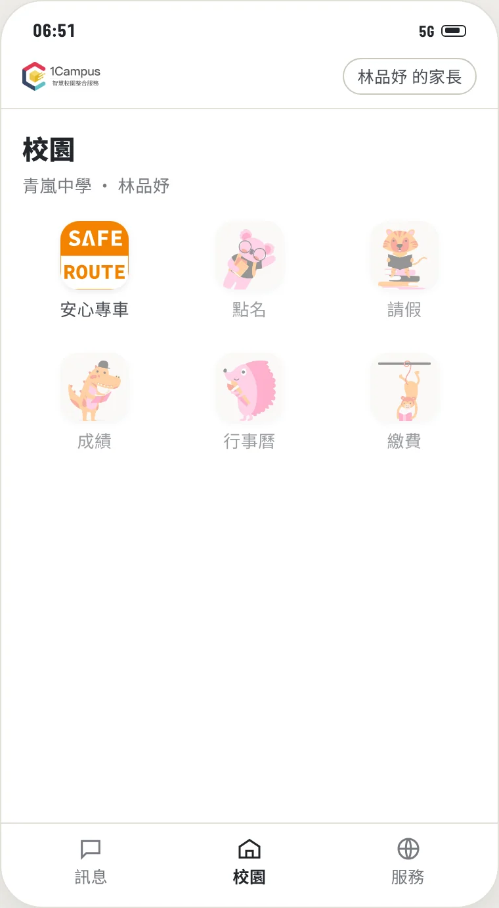
開始使用
1
打開 1Campus App
2
點下方「校園」
3
點「安心專車」
不用另外下載 App，也不用每次登入。
家長有兩個孩子搭車，點「換子女」切換。
安心專車 SafeRoute · 1Campus
04
學生
畫面寫著下一站和表定時間，
地圖上看得到車的位置。
準點
晚到 12 分
提早 1 分
準不準時，直接寫出幾分鐘。
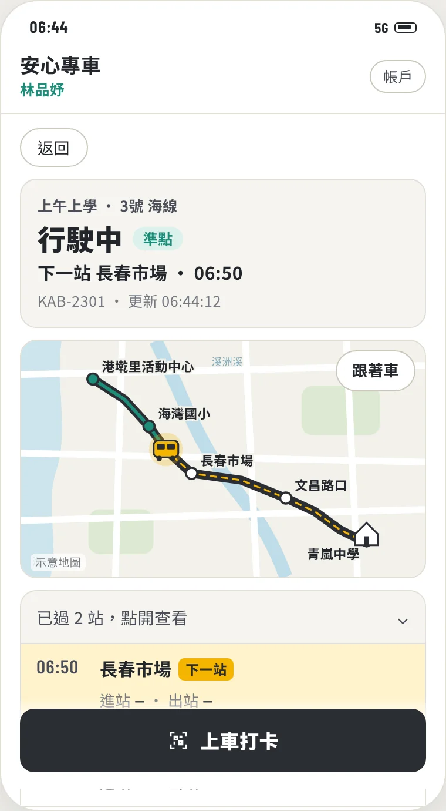
安心專車 SafeRoute · 1Campus
05
學生
表定
06:50
進站
06:49
出站
06:51
車到了會補上實際時間，
經過的站也能點開來看。
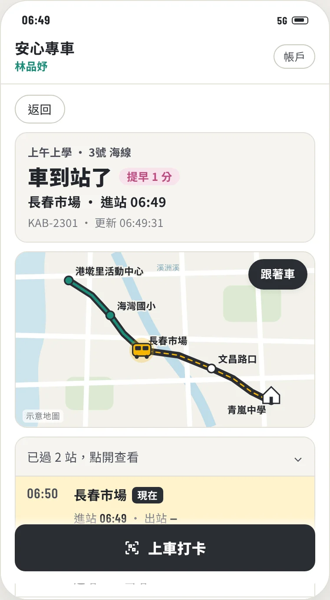
安心專車 SafeRoute · 1Campus
06
HIGHLIGHT · 掃碼打卡
學生 上車掃車上的乘車碼
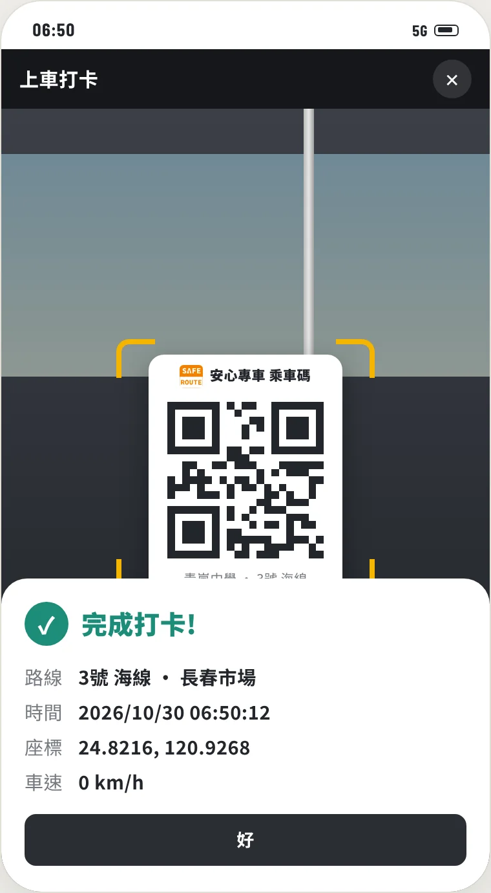
學生 留下上車時間和地點
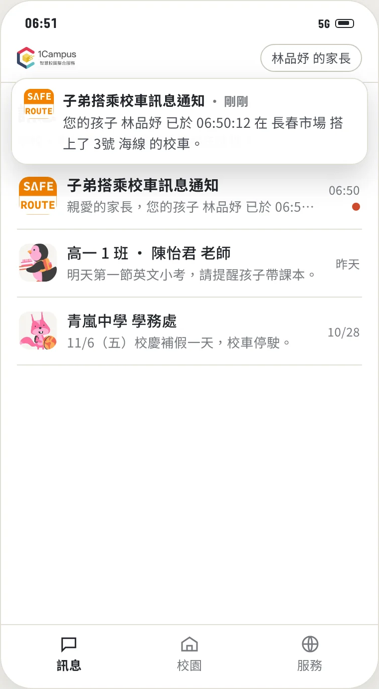
家長 同一刻收到通知
學校的打卡紀錄也同時多一筆
07
家長
子弟搭乘校車訊息通知
您的孩子 林品妤 已於 06:50:12 在 長春市場 搭上了 3號 海線 的校車。
幾點、哪一站、哪條線，一看就知道。
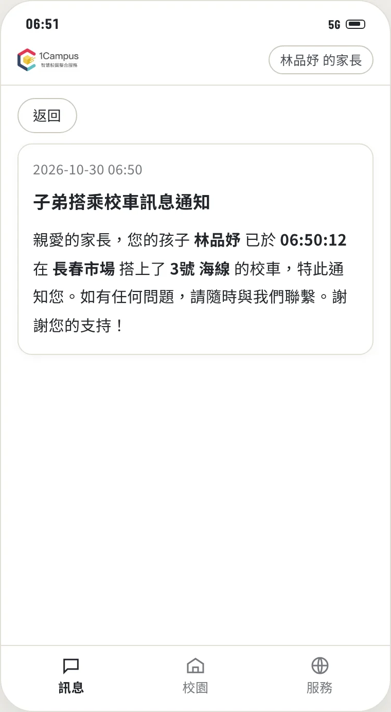
安心專車 SafeRoute · 1Campus ｜ 示範資料皆為虛構
08
家長
已到終點
最後一站 青嵐中學 · 進站 07:19
從上車到到校，家長都看在眼裡，
可以放心出門上班。
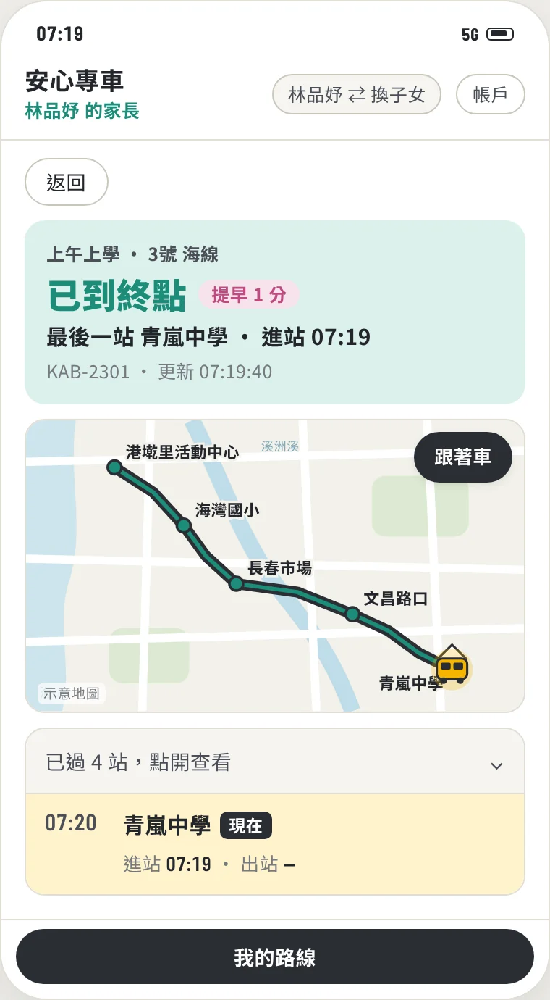
安心專車 SafeRoute · 1Campus
09
老師
晚到的路線自動排在最上面，
不用一條一條點。
5號 溪洲線
晚到 12 分
2號 市區線
準點
6號 丘陵線
提早 2 分
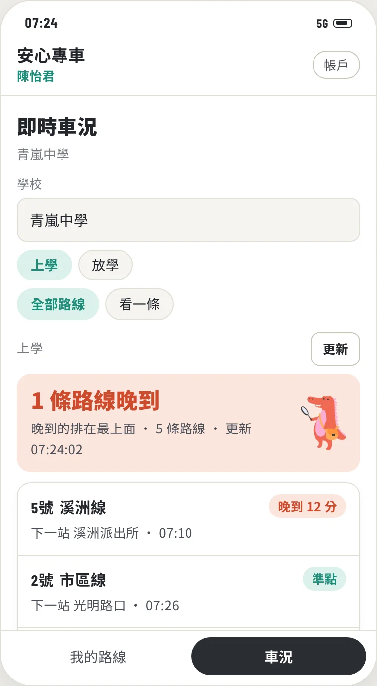
安心專車 SafeRoute · 1Campus
10
老師
溪洲大橋頭
表定
06:58
進站
07:09
每站都有時間紀錄，
跟家長說明時有根據。
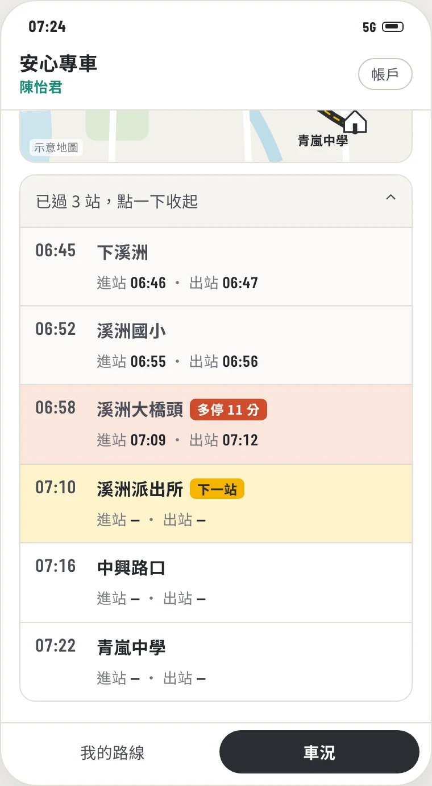
安心專車 SafeRoute · 1Campus
11
學校
常用的話已經寫好，選一句就能送。
家長和相關老師同時收到。
塞車晚到 10 分。
車輛調整換車請稍候，約晚到 10 分。
嚴重交通問題，隨時更新動態狀況。
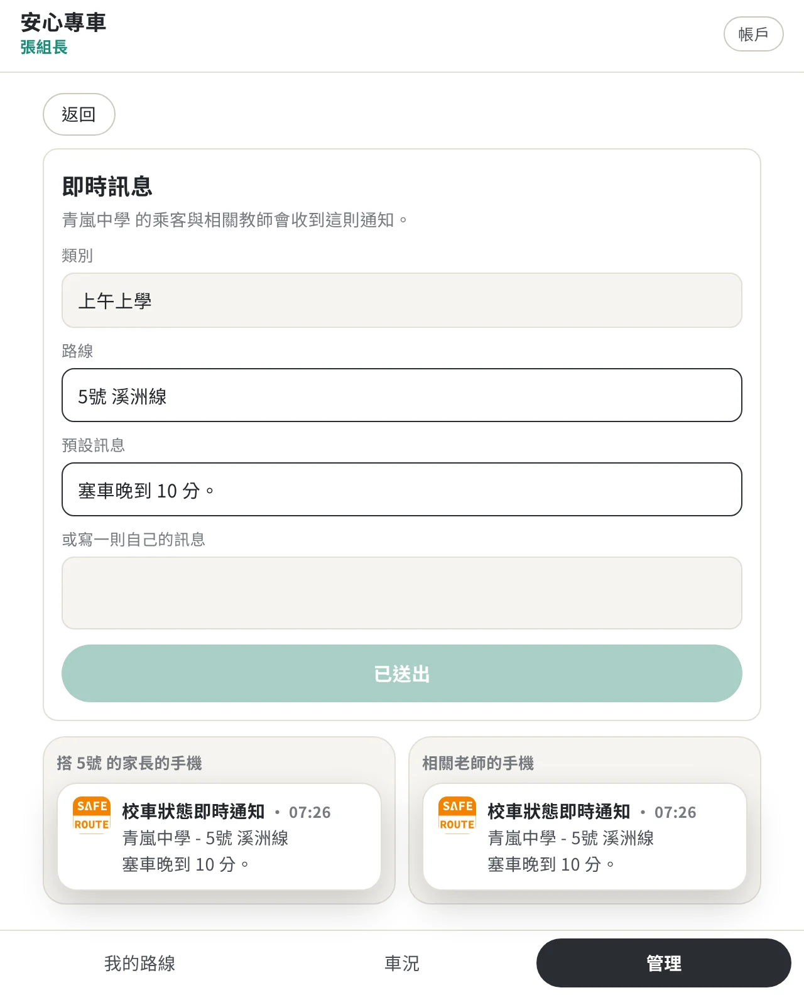
安心專車 SafeRoute · 1Campus
12
學校
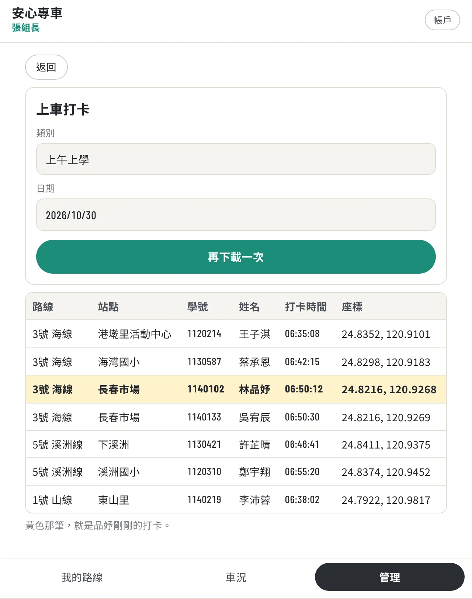
誰、幾點、在哪一站上車，可下載報表。
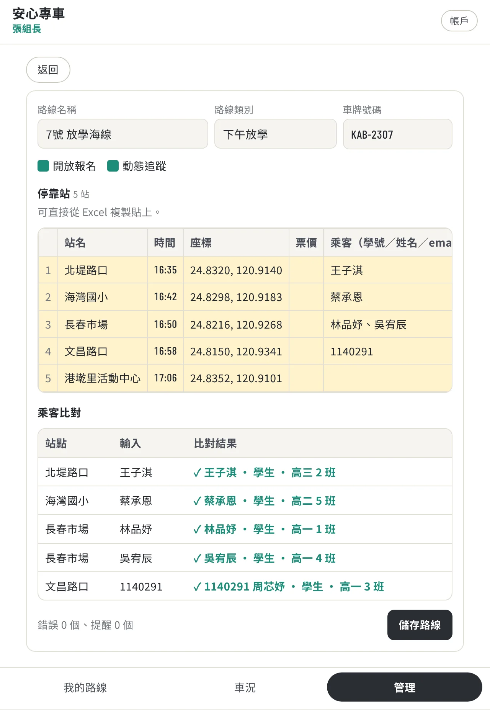
站名、時間、乘客一次貼，自動比對名冊。
安心專車 SafeRoute · 1Campus
13
THANK YOU
學生、家長、老師、學校，四個身分都能操作
tinachou-hash.github.io/saferoute-experience